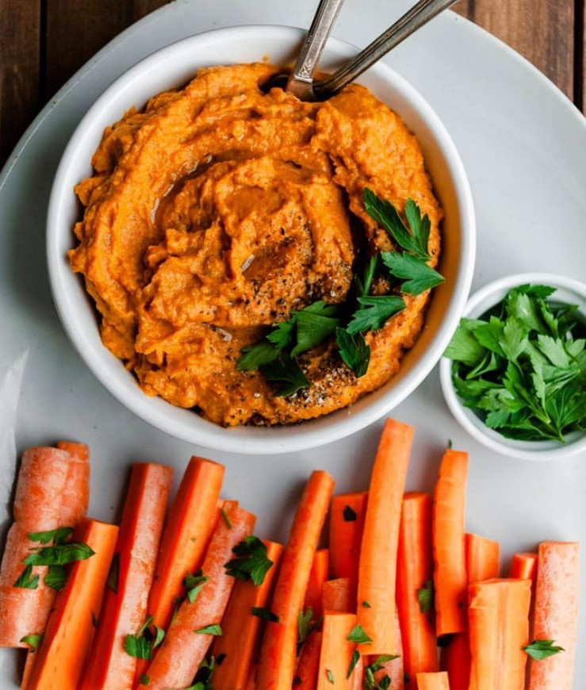

Roasted Carrot Dip

Ingredients
- As many carrots as you like
- Olive oil
- Salt
- Pepper
- Tahini
- Lemons
- Sesame seeds and/or pine nuts to serve
Preparation
- Chop and roast the carrots on 180*C with some olive oil, salt and pepper, until nicely browned, approx 30-40 min
- Once carrots are cooled, try to resist eating them before continuing
- Blend all the ingredients with some extra olive oil until you get your desired consistency and flavour
- Refridgerate until ready to serve
- Sprinkle with some sesame seeds and roasted pine nuts
- Serve with your favourite veggies or spread on crackers